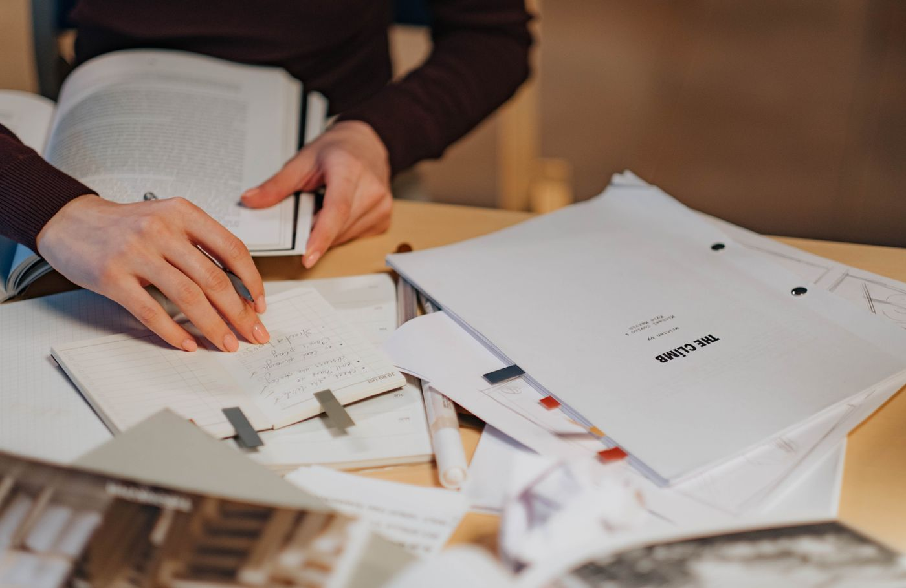

About Clara
Eleven years in the classroom first.
Clara Bennett trained as a primary teacher — a degree in education followed by a postgraduate teaching qualification — and spent eleven years teaching Years 3 to 6 in state primary schools, the last four as maths lead for her school. The classroom is where the habits on this site come from: plan in writing, check understanding every few minutes, and never let a child leave believing they are "just bad at maths".
In 2022 she left full-time classroom teaching to tutor — a deliberate move to work with fewer children, in more depth. Bright Learning teaches at most twenty-four pupils a week, from a teaching room at her home in Manchester and online. Every lesson is taught by Clara herself; there are no substitute tutors and no hand-offs, and when the register is full, enquiries join a waiting list rather than a bigger group.
The practice keeps the parts of school that work — terms, plans, reports — and drops the parts that don't. Fees are printed. Groups are capped at four, and stay capped. And the answer to "will this get my child a place / a grade / a level" is always the honest one: here is the plan, here is the evidence as we go, and no, nobody can promise that.
How tuition runs
Assessment → plan → lessons → report. The free assessment lesson establishes where a child actually is — not where the year group says they should be. The written plan follows within three school days and is agreed with parents before the first paid lesson. Lessons run weekly in term time, and after each one a two-line note goes home: what was covered, what to practise. In the last week of term, the one-page report lands: covered, improved (with the evidence), and next.
Homework, plainly: short, specific, and never more than twenty minutes — always practice of something already taught, never new material a parent has to teach. Nothing is set in the first week, and if homework starts causing rows at home, tell Clara; the plan changes, because a miserable routine teaches nothing except avoidance.

Safeguarding & boundaries — in print
- Enhanced DBS checkClara holds an enhanced DBS certificate, shown to parents at the first meeting and renewed every three years. The certificate number is available on request.
- Observable settingsLessons take place in the teaching room with the door open and another adult in the house. Online lessons run on a recorded platform that a parent may join at any time, announced or not.
- Communication runs through parentsClara never messages a pupil directly — no texts, no social media, no exceptions. Lesson notes, plans and reports go to the parent or guardian who made the enquiry.
- Records kept properlyPlans, notes and reports are kept for the pupil's time with the practice and one year after, then deleted. Nothing about a pupil is shared with a school without the parent's written say-so.
Terms, briefly
- FeesAs printed on the home page. Per term in advance or monthly by standing order, at the same total; one lesson free in every full term.
- CancellationFree up to 6pm the day before a lesson. One no-questions rearrangement per term for illness.
- StoppingEither side may end tuition with two weeks' notice; unused prepaid lessons beyond the notice period are refunded in full.